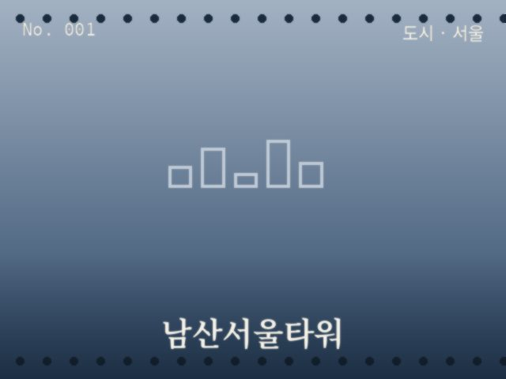
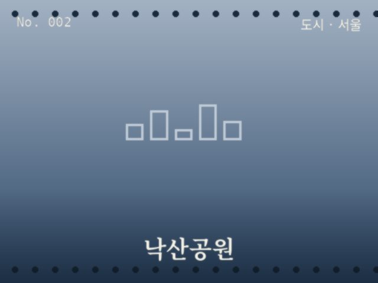
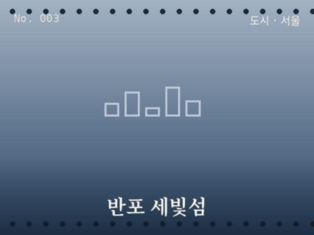
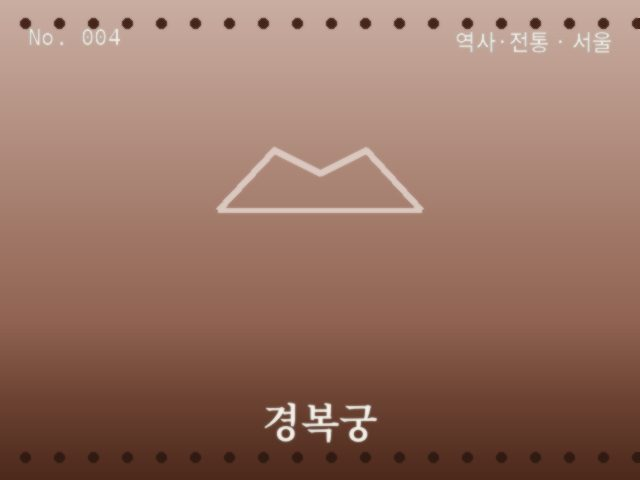
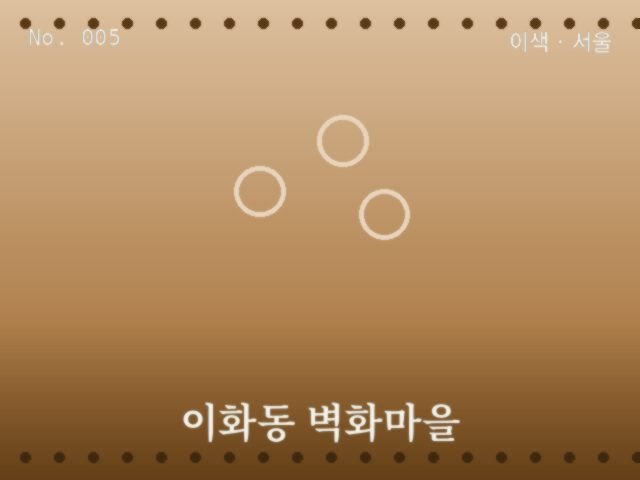
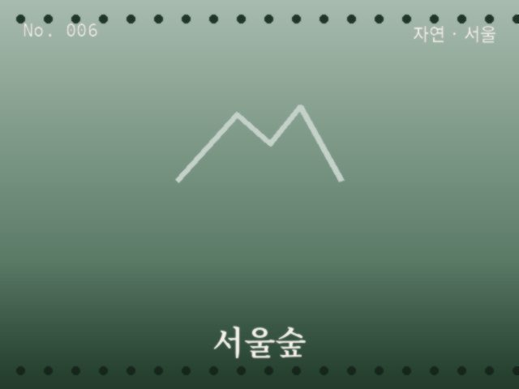
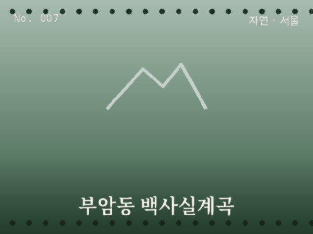
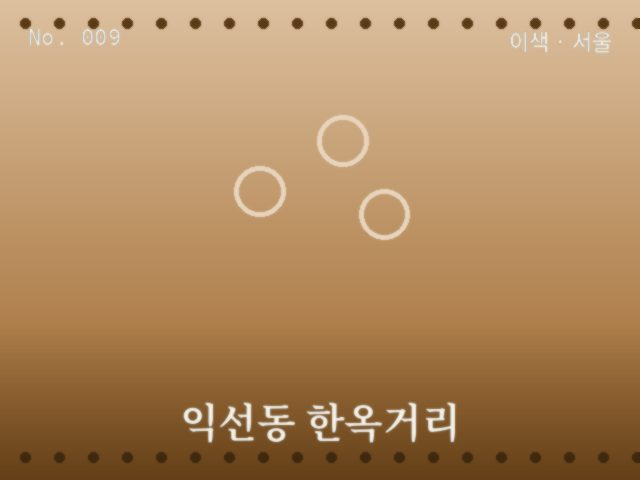

도시
서울
남산서울타워
서울 전역이 내려다보이는 야경의 정석

도시
서울
낙산공원
성곽 너머로 도심이 겹쳐 보이는 언덕

도시
서울
반포 세빛섬
한강 위에 뜬 인공섬과 무지개분수 야경

역사·전통
서울
경복궁
고궁 처마선과 근정전이 만드는 전통 건축의 정수

이색
서울
이화동 벽화마을
계단마다 그림이 있는 골목

자연
서울
서울숲
도심 한복판의 사계절 숲

자연
서울
부암동 백사실계곡
도심 속에 숨은 맑은 계곡

자연
서울
여의도 한강공원 벚꽃길
봄이면 터널이 되는 벚꽃길

이색
서울
익선동 한옥거리
좁은 골목 속 레트로 감성 카페거리